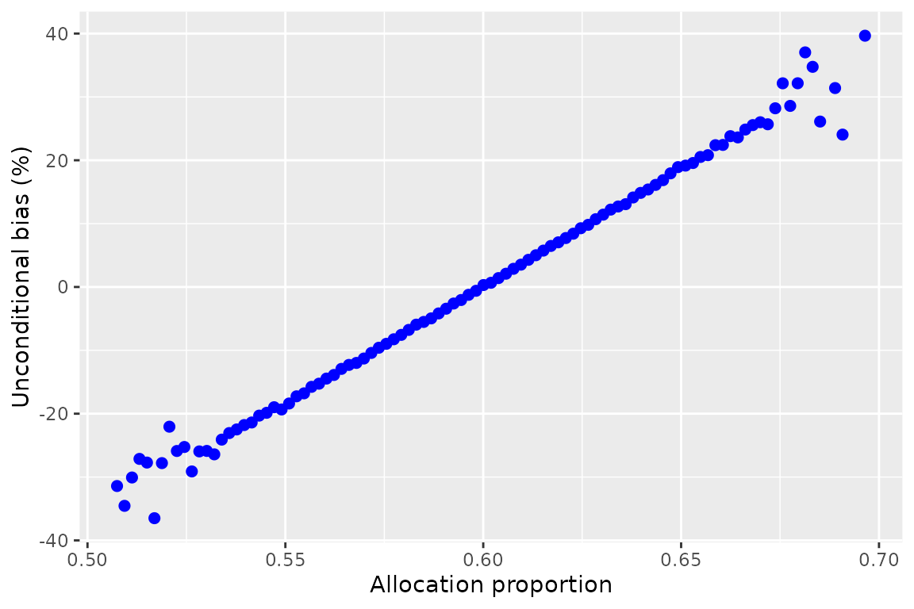
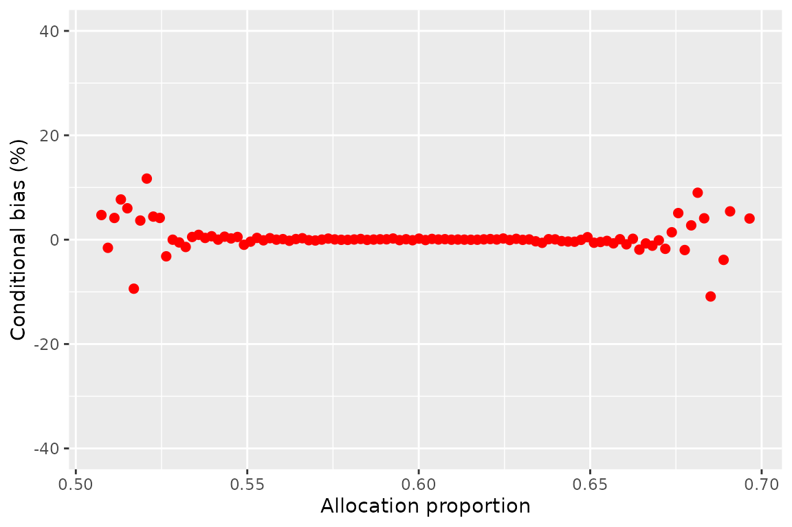

RPW
RPW.Rmd
# Setup
nsim = 10^6
N = 1000
p0 = 0.25
p1 = 0.5
theta = log(1-p1)-log(1-p0)
set.seed(7)
theta_U = theta_D = theta_C = ID = IU = N1 = rep(NA, nsim)Simulate nsims two-arm RPW trials (not run):
# Simulate trials:
for(i in 1:nsim){
trial = randomiseRPW(N, p0, p1)
N0 = trial[1]
X0 = trial[2]
N1[i] = trial[3]
X1 = trial[4]
theta_U[i] = log(1 - X1/N1[i]) - log(1 - X0/N0)
IU[i] = 1/(1/(N1[i]-X1) + 1/(N0-X0) - 1/N1[i] - 1/N0)
phat = (X1/N1[i] + X0/N0)/2
v = (3 + 4*(phat-0.5))/(1 - 4*(phat-0.5))
vT = (1-X0/N0)/(2*(1-phat))
ID[i] = 1/(v/(N*vT*(1-vT)))
Fhat = ID[i]/IU[i]
theta_D[i] = log(N0/N1[i])
theta_C[i] = (theta_U[i] - Fhat*theta_D[i])/(1-Fhat)
}
IC = IU - ID
varC = 1/IC
varU = 1/IU
RPWsim <- data.frame(varC=varC,
varU=varU,
theta_C=theta_C,
theta_U=theta_U,
N1=N1
)Plot bias for each allocation prop:

#> Warning: Removed 9891 rows containing non-finite values (stat_summary_bin).
Results in tables: all results:
#> bias SE
#> cond -0.0003317982 0.06252772
#> uncond -0.0002605987 0.05002173
#> precision weighted cond 0.0008696732 0.06239058
#> precision weighted uncond 0.0006779951 0.04991318What proportion of trials have an allocation ratio of less than / greater than 0.60?
#> [1] 509277 490723Results split by over/under 0.60:
#> bias SE
#> cond (<=0.60) -0.0004349983 0.06238776
#> uncond (<=0.60) 0.0232219223 0.04987065
#> cond (>0.60) -0.0002246962 0.06267297
#> uncond (>0.60) -0.0246309824 0.05017852